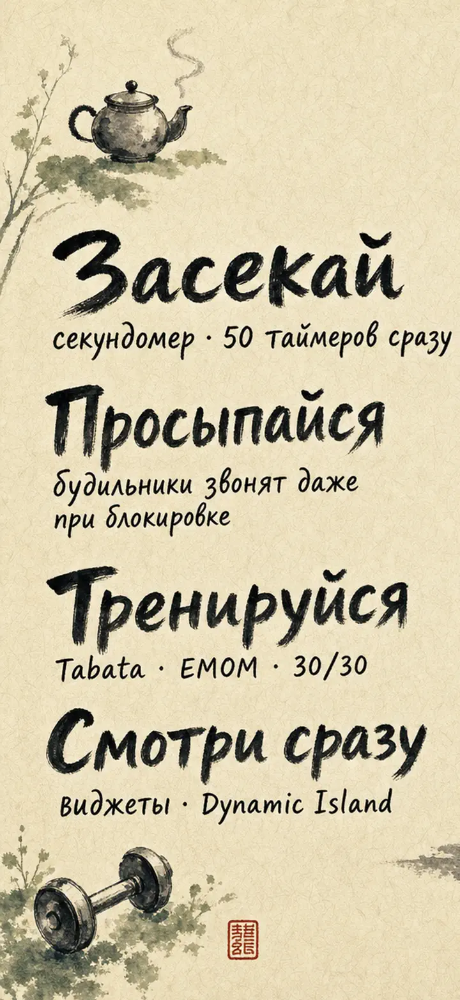
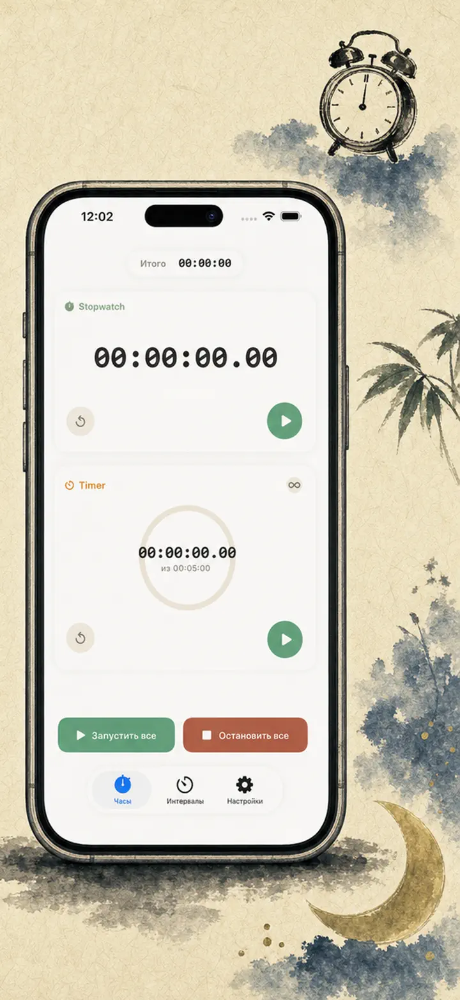
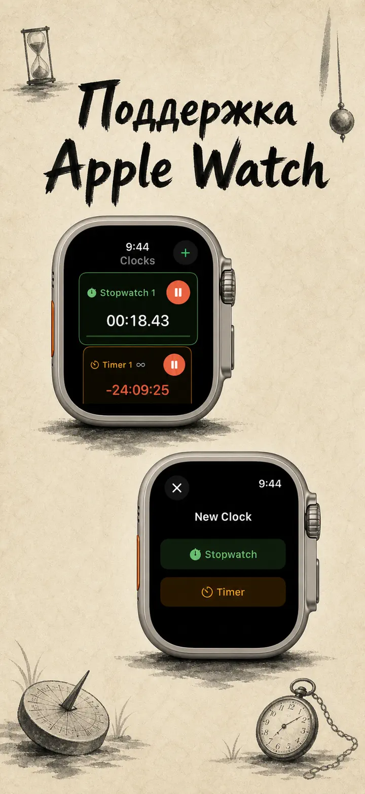
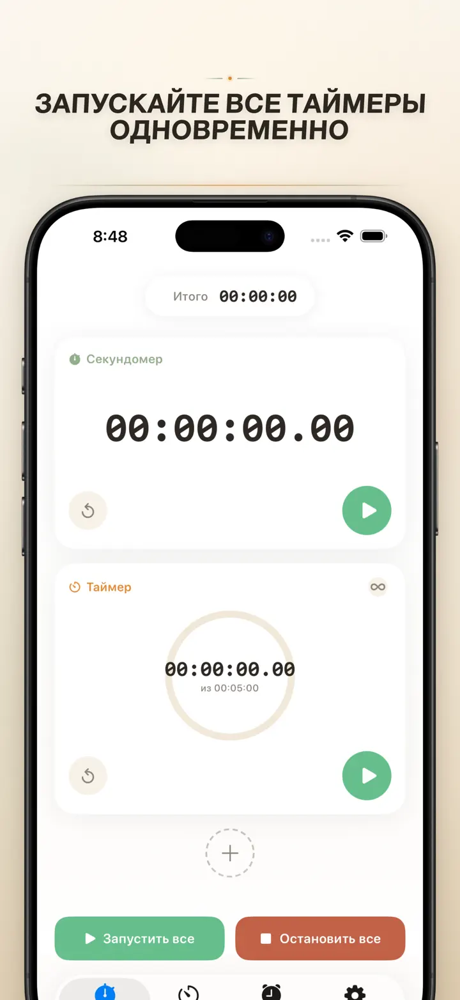
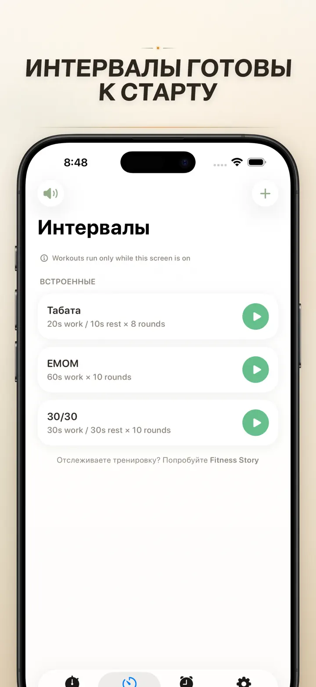
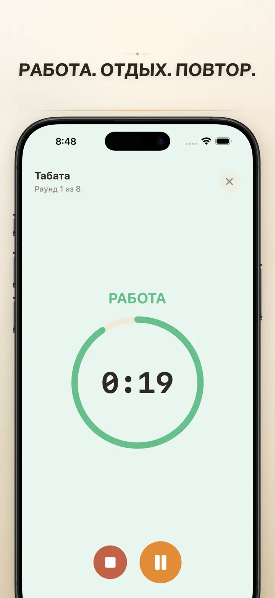
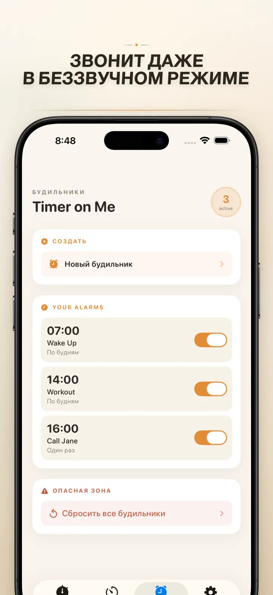

Timer on Me
Таймер, будильник, секундомер
Теперь с будильниками с датой: разовый будильник на любую дату и время, плюс повторяющиеся будильники, 50 таймеров, HIIT & Tabata и Apple Watch.
Загрузить из App Store
О приложении
Timer on Me — это мульти-таймер и секундомер для iPhone, iPad и Apple Watch. До 50 независимых таймеров одновременно, точные интервальные тренировки и будильники, которые действительно звонят — даже при заблокированном iPhone или закрытом приложении.
БУДИЛЬНИКИ
- Пробуждение и напоминания с собственными названиями и расписаниями по дням недели
- На базе AlarmKit — звонят даже когда iPhone заблокирован или Timer on Me закрыт
- Настраиваемый повтор сигнала (3 / 5 / 9 / 15 / 30 минут) либо без повтора
- Выбирай встроенные мелодии или импортируй свои звуки
- Включай и выключай одним касанием в отдельной вкладке «Будильники»
ИНТЕРВАЛЫ И ТРЕНИРОВКИ
- Готовые пресеты Tabata, EMOM и 30/30 — два тапа и пошёл
- Редактор интервалов: работа, отдых и раунды в минутах и секундах
- Полноэкранный режим тренировки с цветной индикацией фаз и опцией беззвучного режима
- Пауза, пропуск и продолжение без потери прогресса
APPLE WATCH
- Полноценное нативное приложение watchOS, а не просто зеркало с телефона
- Несколько секундомеров и таймеров на запястье одновременно
- Секундомер с точностью до сотых долей секунды
- Собственные расширения циферблата для запуска одним касанием
- Работает автономно, даже если iPhone не рядом
50 ТАЙМЕРОВ СРАЗУ
- До 50 независимых таймеров и секундомеров в одной сессии
- Запуск, остановка и сброс по одному или группами
- Авто-повтор для циклических раундов
- Таймеры продолжают идти после нуля, фиксируя переработку
- Индикатор прогресса: жёлтый на 50%, красный на 10%
- Перетаскивание для порядка, свои названия
НАДЁЖНЫЕ ОПОВЕЩЕНИЯ
- AlarmKit: будильник звонит, даже когда iPhone заблокирован или приложение закрыто
- Dynamic Island и Live Activity — прогресс на виду
- Виджеты домашнего экрана: маленький, средний, большой
- Встроенные мелодии: колокольчики, пение птиц, винтажные телефоны
- Предпрослушивание одним касанием
- Режим «Не гасить экран» для длинных сессий
НАСТРОЙКИ И ОБМЕН
- Показывайте или скрывайте десятые, итоги и проценты
- Сохраняйте и перезаписывайте пресеты, возвращайтесь к ним одним касанием
- Экспорт в CSV, JSON или простой текст
- Делитесь с коллегами, учениками или тренером
ДЛЯ iPhone, iPad И APPLE WATCH
- Адаптивные макеты для любого экрана
- Split View на iPad
- Поддержка 34 языков
ИДЕАЛЬНО ДЛЯ
- HIIT, Tabata, CrossFit и круговые тренировки
- Раунды бокса, самбо и единоборств
- Pomodoro — учёба, ЕГЭ, сессия, концентрация
- Кофе, варка яиц, борщ, пельмени, духовка и кухонные таймеры
- Йога, пилатес, медитация и дыхательные практики
- Репетиции выступлений и занятия на инструменте
- Уроки, мастер-классы и групповые активности
- Настольные игры и вечеринки
Скачай Timer on Me и возьми каждую минуту под контроль — в зале, на работе или дома.
Политика конфиденциальности: https://masawata.net/privacy-policy.html Условия использования: https://www.apple.com/legal/internet-services/itunes/dev/stdeula/
Снимки экрана






Timer on Me
Теперь с будильниками с датой: разовый будильник на любую дату и время, плюс повторяющиеся будильники, 50 таймеров, HIIT & Tabata и Apple Watch.
Загрузить из App Store